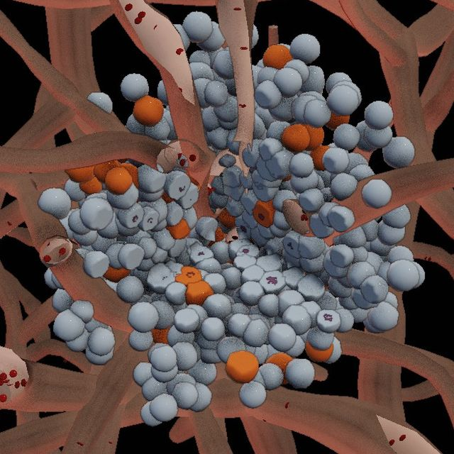
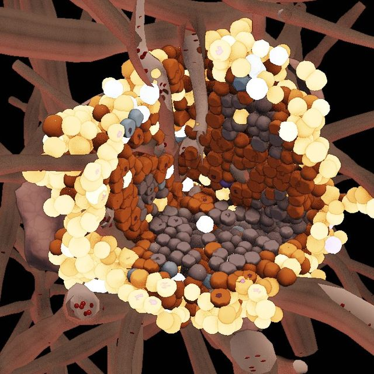
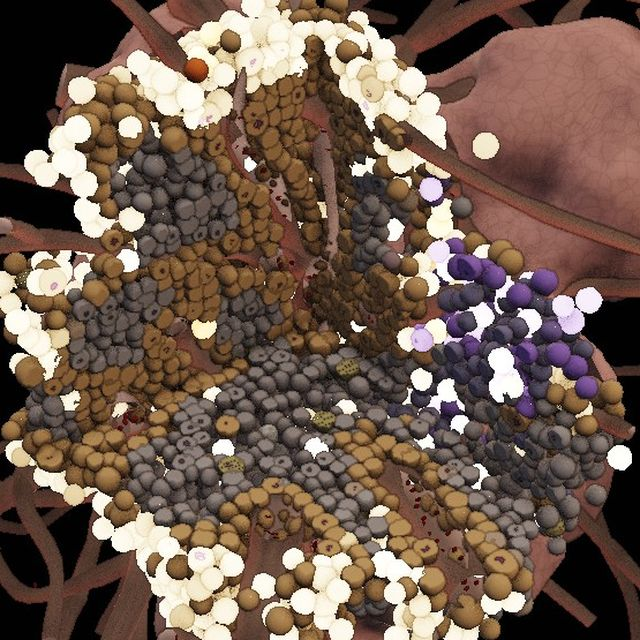
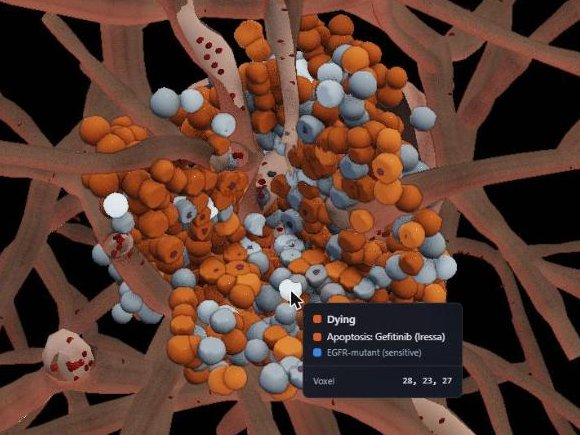
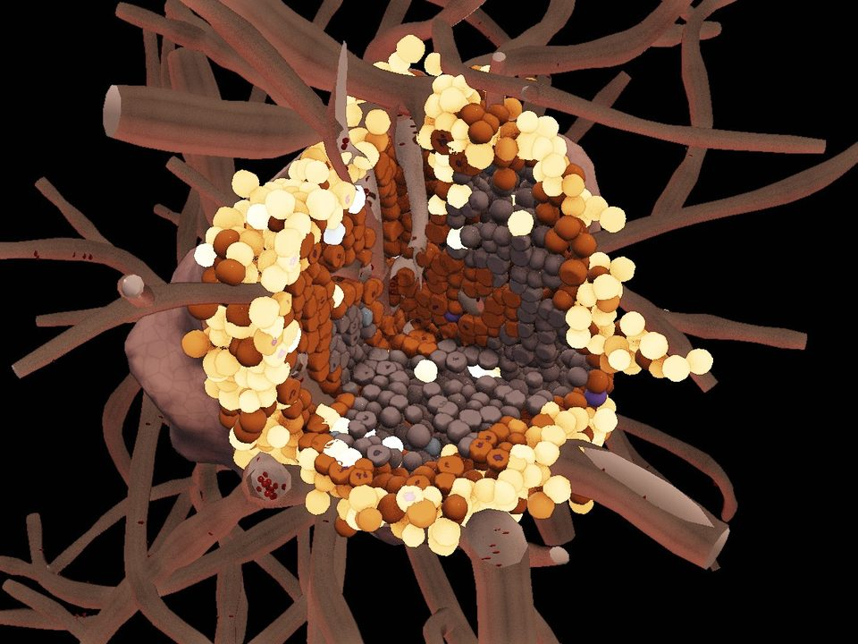

Day 0
The pill works
1,500 tumour cells, 92% of them sensitive to the drug. Treatment starts on day one.
A 3D simulator, built on real lab data, that shows how EGFR lung tumours become resistant.
How resistance happens
Targeted drugs like gefitinib (sold as Iressa) shrink EGFR lung tumours fast. But a tumour is millions of slightly different cells, and the drug only has to miss a few.

1,500 tumour cells, 92% of them sensitive to the drug. Treatment starts on day one.

Most of the tumour dies. The cells that survive the pill keep dividing and fill the space.
The survivors carry the T790M mutation.

A second drug buys time, then a new mutation escapes it too. By day 60 the tumour has 20,098 cells, and not one is drug-sensitive.
Osimertinib from day 20; C797S and MET-amplified cells regrow.
What you can do
Point at any cell and it tells you what it's doing and why: killed by the drug, starved of oxygen, or just dividing. Nothing is scripted; each event follows from a rule.
Causes include drug-induced apoptosis, hypoxic necrosis and crowding arrest.

Slice away a quarter or half and look inside. You'll see a dead core where oxygen runs out, living cells hugging the blood vessels, and resistant cells taking over from within.
One cell per 20 µm voxel, each in its own state.

Run the same tumour under different plans, like one drug, two drugs in sequence, or pausing the drug when the tumour shrinks, and see how long each holds resistance off.
In the model, no plan stopped relapse. Adaptive osimertinib delayed it the most and used 39% less drug.
Adaptive: the drug pauses when the tumour halves and restarts when it regrows. Source: validation report, §7.
Why trust it
Cell growth rates, drug responses and the order mutations appear in all come from public cancer databases, not from guesses.
Who it's for
Test an idea about dosing or resistance, then change any number in a data file and run it again.
Explore how a resistance mutation spreads under a given drug plan, and show it to a room instead of describing it.
Let students watch evolution happen inside a tumour and ask any cell why it died.
It runs in your browser, with no install and no sign-up.
The team